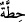

hükmüne karşı geldiklerini bildirmek için açıkça “değiştirdiler” denildi.
İsrâîloğulları’nın “hıtta” (  ) yerine buğday anlamına “hınta” ( ) dedikleri
rivâyet edilmiştir. Başka bir rivâyette kendi lisânları olan Nabat dilinde “kırmızı
buğday” mânâsına bir söz söyledikleri ve böylece Allah’ın emri ile alay ettikleri
nakledilmiştir.
Mücâhid, bu konuyu anlatırken şöyle demiştir: Başlarını eğmeleri için
İsrâîloğulları’nın gireceği kapı alçaltıldı. Ancak onlar inâd edip başlarını eğmediler.
Allah’ın kelâmını değiştirdikleri gibi, burada da emre muhâlefet için kıçüstü sürünerek
girdiler.
“Muhsinler” ise emredildikleri gibi hareket ettiler. Bu yüzden Allah Teâlâ,
“İsrâîloğulları değiştirdi” demeyip, “zâlimler değiştirdi” diyerek muhsinleri
diğerlerinden ayırmıştır. Bu lâfzın zâhirinden İsrâîloğulları’nın sadece “hıtta” (  )
)
sözünü değiştirdikleri, fakat boyunlarını eğerek kapıdan geçtikleri anlaşılır.
Müfessirlerden bir kısmı böyle düşünürken bir kısmı da onların hem “hıtta” ( )
sözünü; hem de kapıdan girerken yapmaları gereken davranışı değiştirdikleri
inancındadır. Bu açıklamaya göre “Onlara denilmeyen söz”den maksad “onlara
emredilmeyen” iştir. Zira Allah’ın emri sözdür. Onlar bütün sözleri değiştirmişlerdir.
Emredildikleri şeyi değiştiren zâlimlerin bu işlerine karşılık biz de gökten mukadder
bir azâb indirdik. “Ricz” ( )’in sonundaki tenvin, azâbın şiddetini ve korkunçluğunu
göstermek içindir. Ayrıca daha önceki âyette de açıklandığı gibi azâb, zâlimler üzerine
indirilmiştir. Eğer azâbın “özellikle zâlimlere olduğu” belirtilmeyip, “mutlak” bir ifâde
kullanılsaydı; yâni “biz onlara azâb indirdik” denilseydi muhsinlere de azâb edildiği
sanılabilirdi.
“Zulm” kelimesi büyük ve küçük günahları içine alan, genel mânâlı bir kelimedir.
“Zâlimler” ifâdesinin ikinci kez geçmesi bir tekrar değildir. Zira daha önce geçen
zâlimler, küçük günah ehli iken, sonra geçen zâlimler, fısk karînesinden de anlaşıldığı
gibi, büyük günah işleyenlerdir. Allah Teâlâ, onların üzerine itâattan çıkmaları; yâni
fıskları sebebiyle “ricz” indirmiştir. “Ricz” ve “Rics” “hoş olmayan, kötü olan” şeyler
olup bundan maksad “tâûn” hastalığıdır.
Rivâyete göre “tâûn” hastalığında bir saatte yirmi dört bin kişi öldü. Yetmiş bin kişi
ölünceye kadar bu hastalık devam etti.
Hadis-i şerifte buyurulmuştur ki: “Tâûn riczdir; yâni murdar bir azâbdır.
İsrâîloğulları’na yahut sizden evvelkilere gönderildi. Bir memlekette tâûn
bulunduğunu işitirseniz oraya girmeyiniz. Eğer içinde bulunduğunuz memlekette tâûn
zuhûr etmişse oradan çıkmayınız.”[287]
Bir başka hadis de: “Cibrîl bana hummâ ve tâûnu getirdi. Hummâyı Medîne’ye
bıraktım, tâûnu Şam’a gönderdim. Tâûn ümmetim için şehâdet ve rahmet, kâfirler
için pis bir azaptır”[288] buyurulmuştur.
Tâûndan ölen mü’min şehîd olup kabir fitnesinden emin olur. Tâûn bulunan beldede